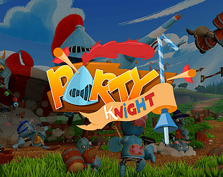
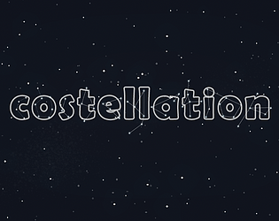
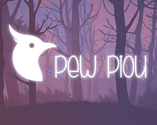
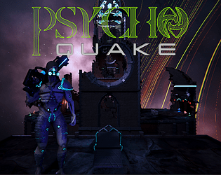
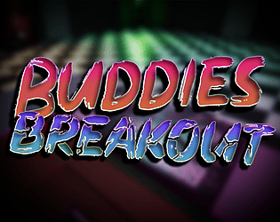
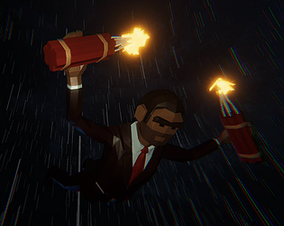
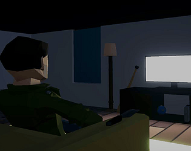
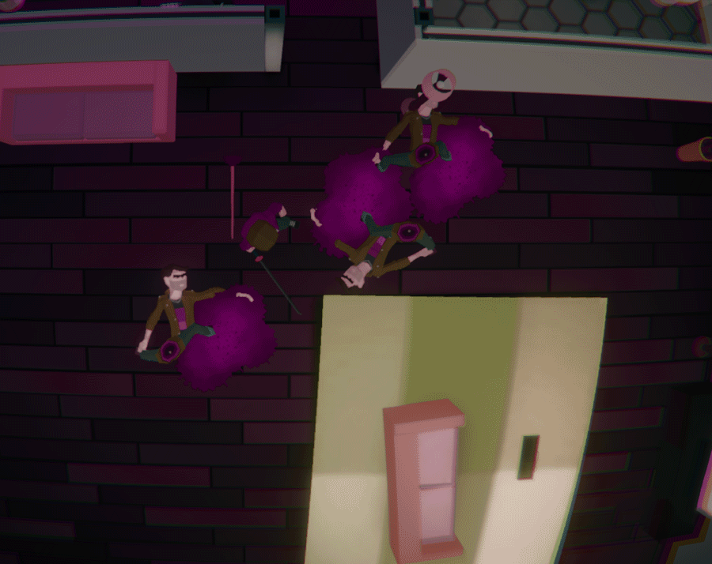

As stated above, My name is Louis VOGEL.
I'm currently studying for a Master's degree in game programming at Cnam-Enjmin. In here, I get to work with a team of awesome people from varied background to make games ! I should finish my studies in 2025.
My goal is to become a gameplay programmer ! I already have a bit of experience in that regard ; of course, I honed my game devskills at school, but I also worked for a year at Sentry Games, where I could work on a project that isn't released yet.
I enjoy video games, Krav Maga, playing the guitar and

 Party Knight is a party game that we realized as a team of 18 student. As one
of the two programmers and a scrum master, I was able to
tackle game development in a long-term project for the first time.
Party Knight is a party game that we realized as a team of 18 student. As one
of the two programmers and a scrum master, I was able to
tackle game development in a long-term project for the first time.

 Take a little break from your hectic day to gaze at the stars!
Take a little break from your hectic day to gaze at the stars!CoStellation is the result of a 3 and a half day workshop whose objective was to create an interactive experience whose inputs would be basic (keyboard, mouse, joystick) but whose outputs would not be limited to a computer screen.

 Pew Piou is a Multiplayer/Shoot'em up where, as migratory birds, you and your
friend must each rally as many birds to your travel as possible.
Pew Piou is a Multiplayer/Shoot'em up where, as migratory birds, you and your
friend must each rally as many birds to your travel as possible.It was realized in 4 days as part of our Master's degree curriculum at CNAM-ENJMIN

 Psychoquake is a multiplayer Quake like game made in two months as a school
project when I was 19. It allowed me to tackle networking with the Mirror unity package.
Psychoquake is a multiplayer Quake like game made in two months as a school
project when I was 19. It allowed me to tackle networking with the Mirror unity package.

 Buddies breakout is a Hotline Miami-inspired stealth game made. It was made for
the Brackeys Jam 2022.2.
Buddies breakout is a Hotline Miami-inspired stealth game made. It was made for
the Brackeys Jam 2022.2.

 Dive Bomb is a game made for Juicy Jam #1 about falling off a plane and
destroying as much things as possible on your way down.
Dive Bomb is a game made for Juicy Jam #1 about falling off a plane and
destroying as much things as possible on your way down.


Deep Cut is a game made for a school game jam. It is inspired by Hotline Miami, with an emphasis on scouting the level before actually playing it.